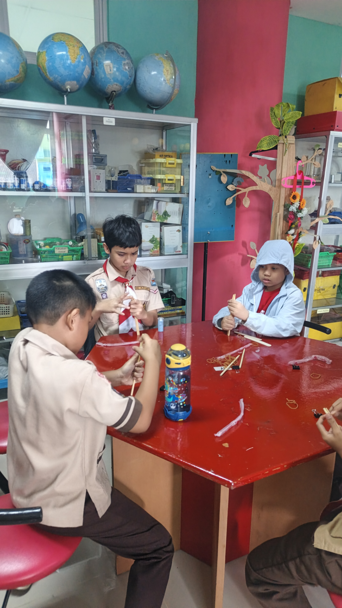
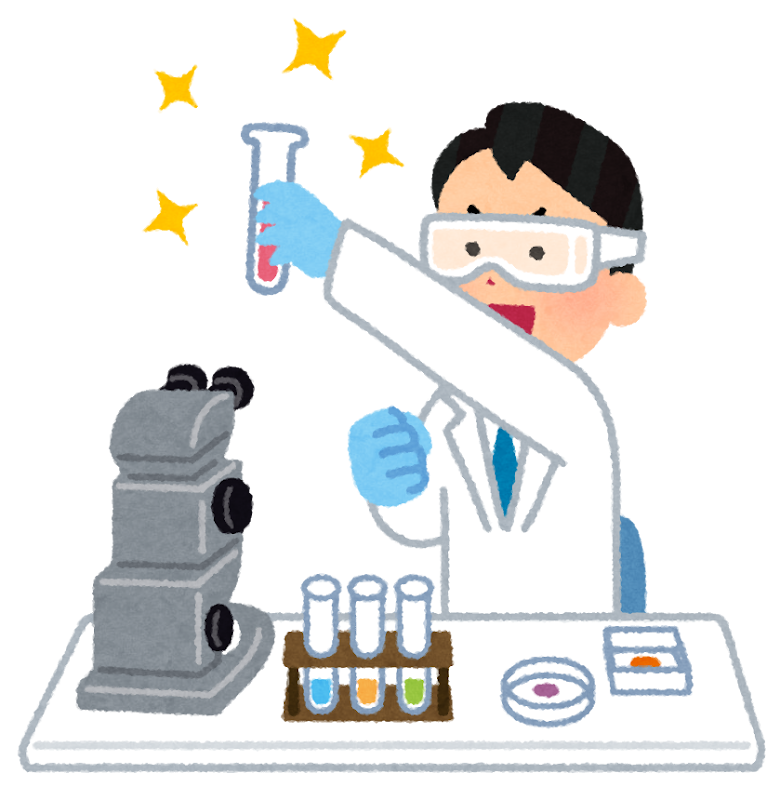
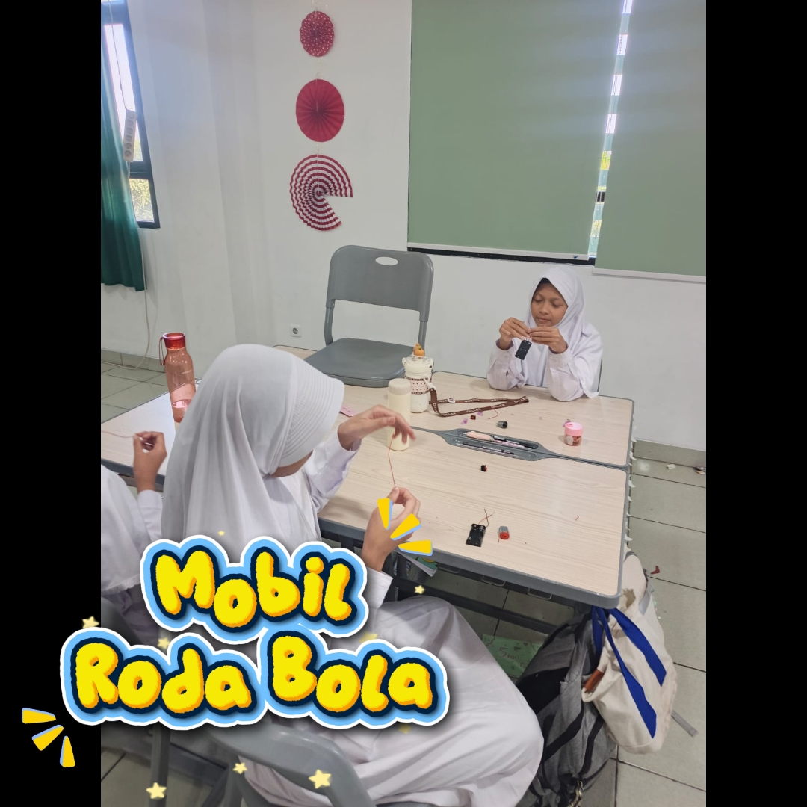

"Sains... semua jadi mungkin"
Ekstrakurikuler sains interaktif yang menyulap rasa penasaran anak-anak TK & SD menjadi eksperimen seru, aman, dan tak terlupakan.
Sains (Science), Teknologi (Technology), Rekayasa (Engineering), dan Matematika (Mathematics) - STEM - masih menjadi hal yang menakutkan bagi para siswa.
Mengenalkan pembelajaran yang sederhana dan menyenangkan pada siswa jenjang Pendidikan dini (PAUD, TK, dan SD).
Meningkatkan keterampilan motorik kasar dan motorik halus siswa.
Mengembangkan keterampilan interpersonal (soft skill) melalui diskusi untuk melatih komunikasi, berani mengungkapkan pendapat dan berfikir kritis dari para siswa.


Belajar melalui praktik langsung yang seru, aman, dan menyenangkan untuk mengenalkan keajaiban reaksi alam sekitar.
Melatih logika berpikir, kreativitas, rasa ingin tahu yang tinggi, serta mengasah kemampuan awal anak dalam memecahkan masalah.
Membuat karya sains sederhana bawa pulang, berpartisipasi dalam tantangan tim kecil, dan mendapatkan sertifikat penghargaan motivasi.
Pilih petualangan sainsmu sendiri dan lihat langsung keseruan eksperimennya!
Mengenal reaksi kimia mendasar lewat eksperimen pencampuran warna ajaib dan slime aman.
Menerbangkan roket balon udara mini dan sirkuit magnet lab!
Mengamati struktur daun, siklus serangga, dan menanam benih ajaib.

Membuat peta rasi bintang yang menyala dalam gelap lewat seni kreatif seru.
Mulai petualangan ilmiah si kecil hanya dalam hitungan menit!
Klik tombol WhatsApp untuk langsung terhubung dengan tim admin ramah kami.
Pilih jenis kelas eksperimen yang diinginkan serta sesi jadwal trial atau reguler yang tersedia.
Datang ke laboratorium, pakai jas lab mini kamu, dan mari kita mulai bersenang-senang!